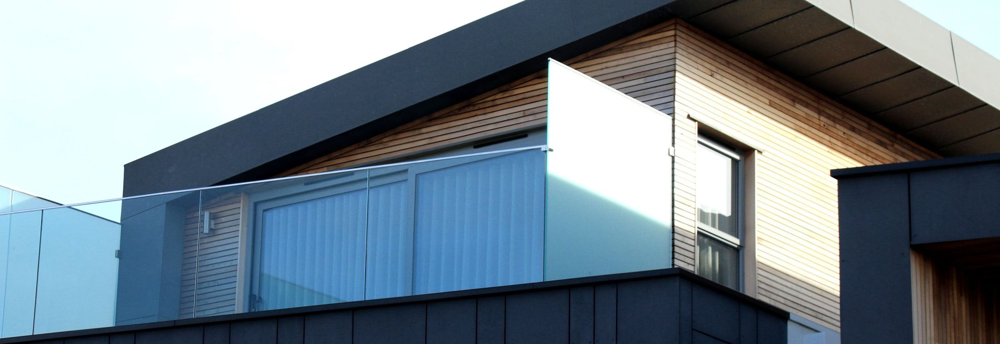
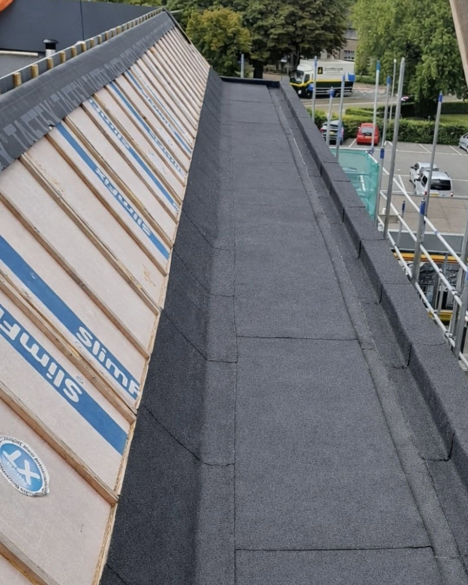

Krycie dachów płaskich
Nowe pokrycie na stropie betonowym, blasze trapezowej albo deskowaniu. Układamy warstwy, wyprowadzamy spadki i robimy obróbki attyk.
Jak to robimy →Kryjemy i uszczelniamy dachy płaskie, tarasy oraz balkony w Płocku i powiecie płockim. Papa termozgrzewalna, membrany EPDM, PVC, TPO i FPO, płynne powłoki PU i PMMA. System dobieramy do tego, co zastajemy na dachu.
Nowe pokrycie, izolacja powierzchni użytkowych oraz naprawy tego, co już przecieka. Każdą z nich opisaliśmy osobno.
Nowe pokrycie na stropie betonowym, blasze trapezowej albo deskowaniu. Układamy warstwy, wyprowadzamy spadki i robimy obróbki attyk.
Jak to robimy →
Izolacja pod płytką albo powłoka, po której da się chodzić. Robimy też obróbki progów drzwi tarasowych i odwodnienie liniowe.
Sprawdź rozwiązania →
Szukamy miejsca, którym wchodzi woda, i decydujemy, czy wystarczy naprawa miejscowa, czy opłaca się renowacja całej połaci.
Zobacz zakres →Dach płaski rzadko zaczyna przeciekać nagle. Zwykle najpierw pojawia się jeden z tych objawów, a woda pokazuje się w środku dopiero po kilku miesiącach.
Żółte obwódki na tynku albo wilgotna plama w narożniku. Miejsce przecieku prawie nigdy nie wypada dokładnie nad plamą.
Woda stoi na dachu dłużej niż dwa dni. Najczęściej to źle wyprofilowane spadki albo osiadła termoizolacja.
Pod pokryciem została wilgoć albo zabrakło odpowietrzenia. Pęcherz z czasem pęka i robi się otwarta dziura.
Papa albo membrana odchodzi od murku ogniowego. Woda wchodzi bokiem i wędruje między warstwami stropu.
Liście i szlam blokują odpływ, kołnierz wpustu puszcza. Po ulewie poziom wody podnosi się ponad obróbkę.
Wełna albo styropapa nasiąkła wodą. Rachunek za ogrzewanie rośnie, a strop nie schnie sam z siebie.

Tak brzmi zdanie, którym firma podpisuje swoje materiały. Stoi za nim prosta arytmetyka: uszczelnienie połaci kosztuje ułamek tego, co wymiana przemoczonego ocieplenia, stropu i sufitów w pomieszczeniach pod dachem.
Umów oględziny →Pięć rozwiązań, którymi pracujemy. Różnią się sposobem łączenia, odpornością i tym, na jakim podłożu wolno je stosować.
Dwie warstwy zgrzewane palnikiem: podkładowa i wierzchniego krycia z posypką. Sprawdza się na stropach betonowych i przy renowacji starych pokryć papowych.
Jeden arkusz kauczuku na całą połać, bez ognia na dachu. Bardzo elastyczny, dobrze znosi ruchy podłoża i ujemne temperatury.
Zgrzewana gorącym powietrzem, szybka w montażu i wygodna przy dużej liczbie kominków i wpustów. Wymaga warstwy rozdzielającej od styropianu.
Bez zmiękczaczy, odporne na promieniowanie i na kontakt ze styropianem. Wybierane tam, gdzie pokrycie ma pracować długo bez renowacji.
Nakładane wałkiem i pędzlem, zbrojone welonem, utwardzają się w jednolitą powłokę bez łączeń. Wchodzą tam, gdzie arkusz byłby trudny do ułożenia: wokół wpustów, kominków, świetlików, na balkonach i progach drzwi tarasowych. PMMA wiąże na tyle szybko, że powierzchnię da się oddać do użytku tego samego dnia.
Pytamy o wielkość połaci, obecne pokrycie i to, gdzie widać wodę. Część spraw da się wstępnie ocenić przez telefon.
Wchodzimy na dach, sprawdzamy stan warstw, spadki, wpusty i obróbki. Bez tego nie da się rzetelnie wycenić roboty.
Dostajesz opis prac, dobrany system oraz cenę i termin. Wiesz, co wchodzi w zakres, a co byłoby pracą dodatkową.
Układamy pokrycie warstwa po warstwie, robimy obróbki i próbę odprowadzenia wody. Na koniec przechodzimy dach razem z Tobą.
SK Hydro Protect zajmuje się dachami płaskimi i hydroizolacją. Nie kryjemy dachówką, nie stawiamy więźby, nie montujemy okien połaciowych. Dzięki temu na dachu płaskim wiemy, czego szukać: gdzie najczęściej puszcza obróbka, jak zachowa się stare pokrycie pod nową warstwą i kiedy naprawa miejscowa nie ma sensu.

Zdjęcia z placu: pokrycia po zgrzaniu, obróbki attyk, odwodnienia liniowe i powierzchnie gotowe do odbioru.


Pracujemy w promieniu 60 km od Gostynina. Mieści się w nim cały Płock i powiat płocki, a także Kutno, Włocławek, Sierpc i Łęczyca z okolicami. Przy większych zleceniach, takich jak połacie na halach i obiektach usługowych, dojeżdżamy również dalej. Najprościej zadzwonić i podać adres - od razu powiemy, czy termin da się ułożyć.
Zadzwoń albo napisz. Umówimy oględziny, sprawdzimy pokrycie i powiemy, jaki zakres prac ma sens w Twoim przypadku.